Menu
Destinations ▾
Malaysia
Japan
China
Vietnam
Recipes ▾
Malaysia
Laksa
Satay
Roti Canai
Char Kuey Teow
Nasi Lemak
Kuih Seri Muka
Japan
Sushi
Sasahmi
Yakitori
Mochi
Onigiri
Ramen
China
Pecking Duck
Kung Pao Chicken
Sweet & Sour Pork
Hot Pot
Dim Sum
Dumplings
Vietnam
Cha Ca La Vong
Bun Cha
Pho Coun
Pho noodle
Xoi
Banh Mi
Map
Contact Us
History Food
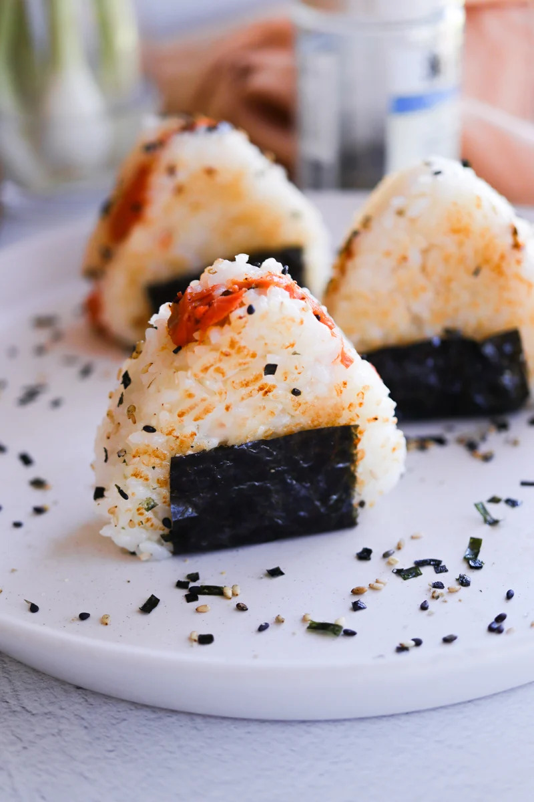 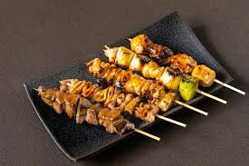
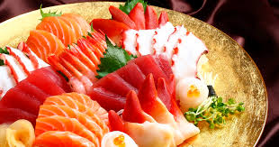
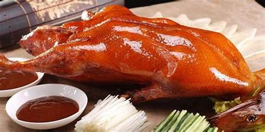


 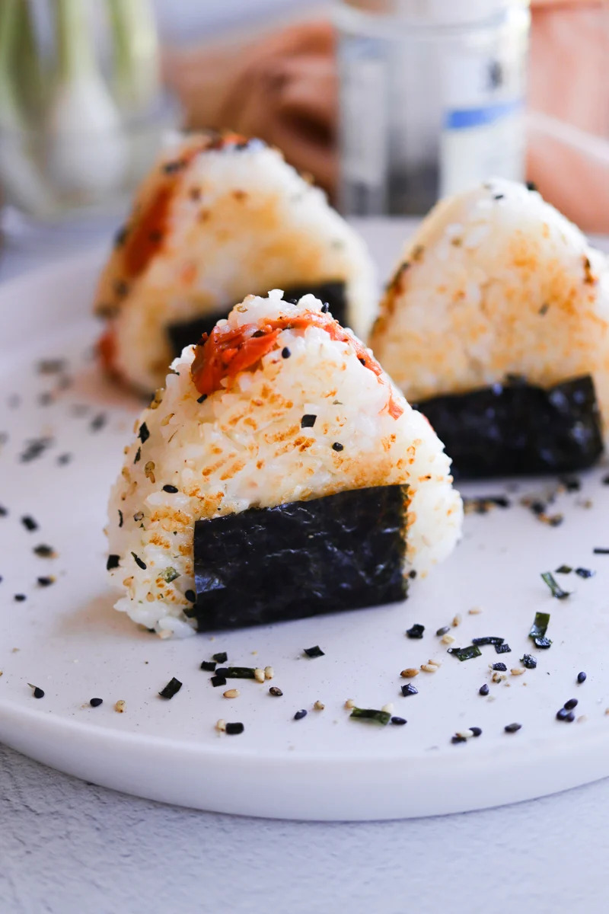
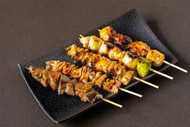
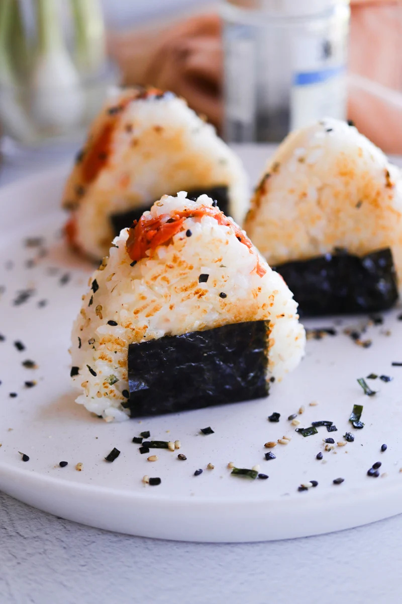
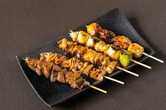
 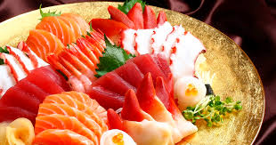
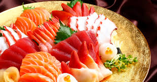


 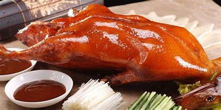
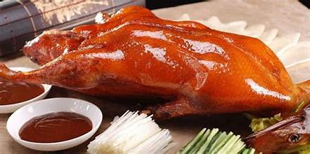